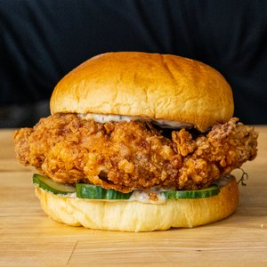

Chick-fil-A Burger

Chick-fil-A Burger
A crispy chicken sandwich you can eat on sundays.
Ingredients:
- 2 Chicken Breast, flattened and halved
- 200g Melk
- 50g Pickle Juice
- 1 Egg
- 150g Flour
- 75g Cornstarch
- Cayenne Powder
- Smoked Paprika
- Onion Powder
- Ground Ginger
- Salt
- Frying Oil
Steps
- Slice the chicken breast in half into roughly bun size pieces. Now using that knife thin out the upper portion of the breast so its a little thinner which will promote even cooking.
- Fill a pot or wok with 2 inches of peanut oil and place over medium heat. Slowly bring to 350 F while we prepare the chicken.
- To a bowl, add milk, egg, and pickle juice and whisk together then toss in the chicken. Let sit while we prepare the dredge (note: this could be brined overnight if you would like).
- For the dredge, set a baking sheet over a scale and the add flour, cornstarch, smoked paprika, cayenne powder, garlic powder, ground ginger, onion powder, and salt before mixing together. Splash some of the milk brine into the flour to create little clumps which will stick to the chicken breading.
- Take the breasts out of the brine and add to the breading. Make sure to coat them thoroughly and press the dredge onto the exterior so it sticks.
- Verify the oil has reached 350 F, then gently place the chicken into the oil and let fry for 6 to 8 minutes until golden brown and delicious. Move the chicken pieces around in the oil as they fry so the oil doesn't have any cold spots and the chicken cooks evenly. Take the chicken out of the oil when it reaches an internal temp of 155 degrees. Add a sprinkle of salt to the fried chicken!
- To serve, place your honey, mayo, and mustard sauce on a bun along with some pickles. Place the chicken breast on the bun, and you are ready to dig in.
Back to Home